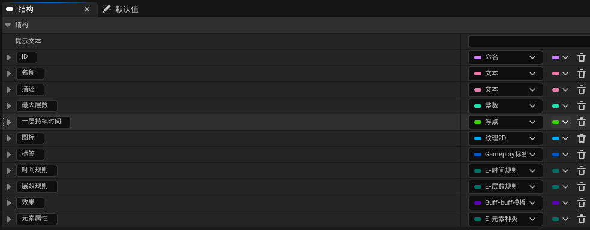
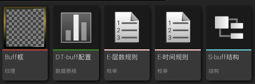
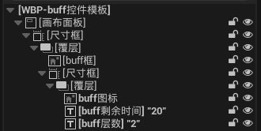
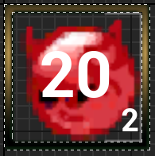
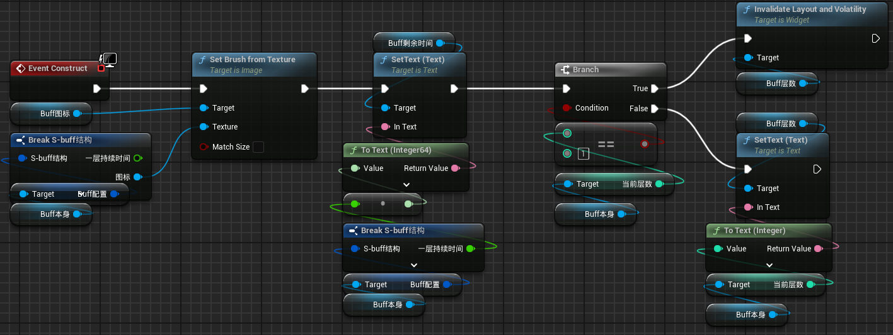

创建一个结构来表示buff的属性，命名为“S-buff结构”。
这里我们不考虑buff持续时间内周期触发和永久buff。
Buff应当有如下属性
时间规则有三种：叠加刷新持续
层数规则有两种：递减清零
创建数据表，命名为DT-buff配置。
因为后续用到buff图标甚至于用到许多图标，所以从epic中添加资源Craft Resources Icons。选择几个图标。打开图标后，将纹理组设置为UI。
这里我们选择两个图标，分别表示加攻击力和加移动速度，并如此命名。创建两个文件夹，如此命名。将相应的图标放到对应文件夹中。
在DT-buff配置中添加这两个buff。
进行如下的一些设置，以区分他们的使用。
加移动速度的最大层数为10，加攻击力的最大层数为1。
先实现buffUI，来帮助我们观察buff的实际情况
绘制一个正方形的buff框，导入到ue中
打开导入后的纹理，将“层次细节--纹理组”的内容赋值为UI
创建控件蓝图，命名为“WBP-buff控件模板”
添加一个画布面板
添加一个尺寸框，来限定buff的大小，对高度和宽度进行重载，大小设置为46
把画布面板设置为所需。然后再调节尺寸框的基础值和重载值一样
然后添加一个覆层，方便让组件重叠组合。这个覆层主要放置技能框和buff覆层。
还需要添加一个尺寸框来限制buff图标的大小。尺寸框水平垂直居中对齐，大小比上一个略小，设置为41
在尺寸框里面再添加一个覆层。因为这个存放buff图标，所以水平垂直对齐选择全覆盖。
框架已经设置好，接下来就是在里面放置需要的东西。
放置一个图像，勾选是变量，命名为buff图标。对齐选择全覆盖。/p>
放置一个文本，勾选是变量，命名为buff剩余时间。对齐为居中。字体大小为20。“行为--可视性”设置为隐藏。
放置一个文本，勾选是变量，命名为buff层数。对齐为右下。字体大小为10。“行为--可视性”设置为隐藏。
最后添加一个图像，放在最外层的覆层中，用作buff框。
 接下来进入图表，添加一个变量，命名为buff本身，类型为BP-buff模板的对象引用，可编辑实例、生成时公开。
在EventConstruct时通过这个变量对buff图标变量进行Set Brush From Texture。Buff图标会在DT-buff配置中定义。同时，我们再实现一些其他的目标。
创建Object类对象，命名为buff-buff模板